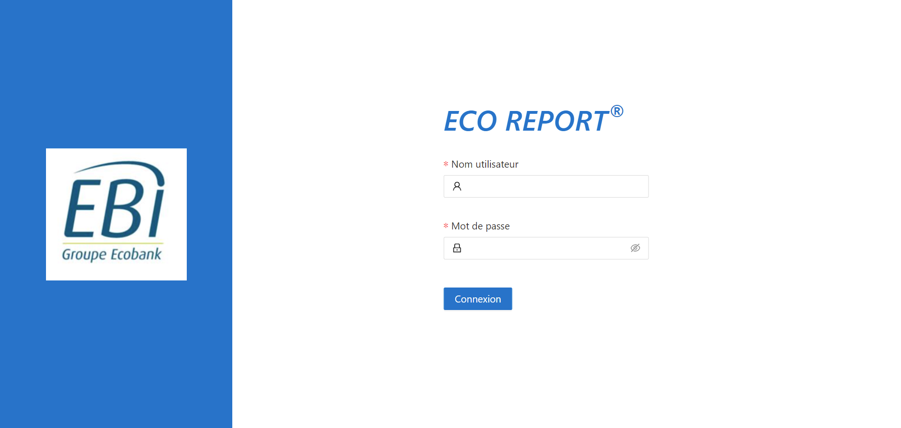

ECOREPORT est un logiciel interne à l'entreprise ECOBANK INTENATIONALE codé en partie par mes soins lors de mes Stages de 1ère et 2ème année de BTS SIO SLAM. C'est un logiciel qui permet la gestion, l'édition et l'affichage de rapport bancaire
Voici un formulaire qui permet d'éditer une ligne dans d'une table
Voici l'affichage de la table anacrédit pour chaque ligne de la table il y'a une bouton modifier qui fait apparaitre le formulaire, une fois la valeur modifier elle va dans valeurs en attente la ou une personne qui à le niveau d'accreditation pourra valider la modification
Voici l'affichage de la table anacrédit avant avec un pré-filtrage en effet table peut contenir des milliers de valeurs alors avant d'afficher les champs de la table j'ai mis en place un filtre avec les donnée les plus récurente
Ici l'employer peut modifier une ligne parmi les 5 disponibles du rapport Annacredit. Une fois la modification établi la modification ce transfère dans la zone attente d'authorisation pour qu'un supérieur puisse l'autoriser.
Voici un formulaire qui permet de creer directement dans la base de donnée de nouvelle valeur, l'utilisateur pourra importer un fichier excel rempli auparavant pour remplir ces case vide
Voici la page des département ou l'on peut créer et gerer un departement, on peut lui accorder les droit de l'écture, d'édition et d'autorisation pour les différent rapport, il y'a un système de double sécuriter ou si le département n'as pas les droits sur un rapport alors l'utilisateur ne pourra jamais avoir accés à c'est droit
Voici la liste des département ou l'on afficher le code qui est utiliser dans les requete sql ainsi que sur les rapports bancaire
Voici la liste des utilisateur ou l'on affiche en complément le département au quelle ils sont attribuer leur état (si leur compte est actif ou nom sur l'Active Directory) ainsi que la dernière connexion en temps réel
Voici comment marche le système d'attribution de droit